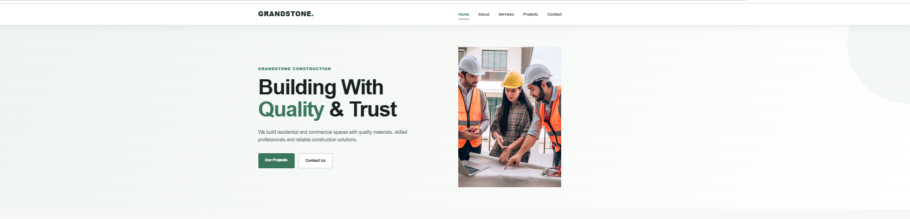

HTML
Webページの構成を考えて、分かりやすく作成できます。
2027年卒業予定 / ITエンジニア
専門学校東京テクニカルカレッジの情報処理科で、 Java・Oracle Database・C・ Webアプリケーション開発を学んでいます。 自分で考えて行動し、チームと協力しながら 最後まで仕事に取り組めるエンジニアを目指しています。
自己紹介を見る
現在、専門学校でJava・C・SQLを中心に、 Webアプリケーション開発とデータベースについて学んでいます。 高校時代からHTML・CSS・JavaScriptを独学し、 FiverrでWeb制作も経験しました。
開発では、問題が起きたときに 「原因を考える」「調べる」「試す」ことを大切にしています。 エラーが出た場合も、原因を一つずつ確認して、 最後まで解決するようにしています。
チーム開発では、メンバーと情報を共有し、 自分の担当だけでなく、 チーム全体で完成させることを意識しています。
Webページの構成を考えて、分かりやすく作成できます。
レスポンシブ対応やWebページのデザインを学んでいます。
Webページの動きやゲームの機能を作ることができます。
オブジェクト指向を学び、Webアプリケーションを開発しています。
プログラミングの基本とArduino開発を学んでいます。
SQLを使ったデータの登録・検索・更新などを学んでいます。
Selected Works
FiverrでのWeb制作、学校でのJava開発、 Webサイト制作、チーム開発など、 これまでに取り組んだプロジェクトを紹介します。



4人チームで開発したWebアプリケーションです。 ログイン機能、データベース接続、 一覧表示機能を担当しました。
開発中にデータが正しく表示されない問題がありました。 コードとSQLを確認して原因を調べ、 必要なときはメンバーに相談しながら修正しました。

Arduinoを使って、LEDやセンサーを動かす グループ開発に取り組みました。 チームで相談しながら、 動作確認と修正を行いました。
C++を使ったLED制御とセンサー処理を担当しました。 動作しない場合は原因を調べ、 メンバーと相談しながら修正しました。

4人チーム ・ Webアプリケーション開発
掲示板Webアプリケーションの制作では、 4人で役割を分担して開発しました。 私はログイン機能、データベース接続、 一覧表示機能を担当しました。
問題が起きたときは、 まず自分で原因を調べて試します。 解決が難しい場合はメンバーに相談し、 チームで問題を解決するようにしました。
HTML・CSS・JavaScriptを独学で学び、 Web制作を始めました。 分からないことは自分で調べ、 実際にコードを書きながら学びました。
Fiverrを通して約1年間Web制作を行いました。 クライアントの希望を確認しながら、 Webサイトの制作や修正を経験しました。 実際の仕事を経験できたことは、 大きな学びになりました。
Java・C・SQL・JSP・Servlet・データベースなどを学んでいます。 また、4人チームでWebアプリケーション開発にも取り組んでいます。
接客の仕事を通して、 相手の話を聞いて、 分かりやすく伝える力を身につけました。 チームで働くときも、 相手の立場を考えて話すことを大切にしています。
私の強みは、主体的に学ぶ力と問題解決力です。
学校では、Javaを使った掲示板システムの開発に取り組みました。 私はログイン機能、データベース接続、 一覧表示機能を担当しました。
開発中にデータが正しく表示されない問題が起きたときは、 コードやSQLを一つずつ確認して原因を調べました。 自分だけで解決できない場合は、 チームメンバーに相談しながら修正しました。 最後まで確認して、正常に動くところまで完成させました。
また、Fiverrでは約1年間、 実際のクライアントから依頼を受けて Webサイトの制作や修正を行いました。 相手の希望を理解し、 分からないことは自分で調べながら対応しました。
入社後も、分からないことをそのままにせず、 自分で調べて学び、周りの人にも相談しながら 問題を解決していきたいです。 新しい技術にも挑戦し、 チームやお客様から信頼されるITエンジニアを目指します。
エラーが起きたときは原因を調べ、 一つずつ確認しながら解決します。
日本語・英語・ベンガル語・ヒンディー語を使い、 相手に分かりやすく伝えることを大切にしています。
分からないことをそのままにせず、 自分で調べて試しながら新しい知識を身につけます。
これからはJava・SQL・Web開発の知識をさらに深め、 設計・開発・テストまでできるエンジニアを目指します。 また、Fiverrでのクライアントワークや チーム開発で身につけたコミュニケーション力を活かし、 ユーザーや会社の課題を技術で解決できる人になりたいです。
ポートフォリオのソースコードや、 これまでに制作したプロジェクトを公開しています。 プロジェクトのコードも整理して公開しています。
ITエンジニアの就職・インターンシップ、 Web開発などについて、 お気軽にお問い合わせください。
Email
freelancerridoy001@gmail.com
GitHub
github.com/ridoyjp